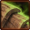

- Stats
- Abilities/Upgrades
- Strategy
- Lore
- Related
Armor: 0
Damage: 12
Attacks: 1
Cooldown: .83
Targets: Ground and Air
Attack Range: 5 |
6 with Grooved Spines
Speed on Creep: 3.375
Acceleration: 1000
Collision Radius: 0.625
Requirements: Level 2 requires Lair, level 3 requires Hive
| Level |  Level 1 Level 1 |  Level 2 Level 2 |  Level 3 Level 3 |
| Minerals |  100 100 | 150 | 200 |
| Vespene Gas | 100 | 150 | 200 |
| Time |  160 160 | 190 | 220 |
| Damage Bonus | +1 | +2 | +3 |
| Total Damage | 13 | 14 | 15 |
100Vespene Cost: 50
Supply:
 2
2Produced From: Larva Build Time:
33Requirements: Hydralisk Den
Overlord Size: 2
Unit Type: Light, Biological, Ground
Requirements: Level 2 requires Lair, level 3 requires Hive
| Level |  Level 1 |  Level 2 Level 2 |  Level 3 Level 3 |
| Minerals | 150 | 225 | 300 |
| Vespene Gas | 150 | 225 | 300 |
| Time | 160 | 190 | 220 |
| Armor Bonus | +1 | +2 | +3 |
| Total Armor | 1 | 2 | 3 |
| Icon | Minerals | Vespene Gas | Research Time | Researched At |
| 150 | 150 | 80 | Hydralisk Den |
Information: Grooved Spines increases the attack range of Hydralisks to 6 from 5
| Icon | Minerals | Vespene Gas | Research Time | Researched At |
 | 100 | 100 | 100 | Lair |
Cast Time:
~1.33Information: Upon research of burrow, most Zerg units are given the ability. Burrow times vary from unit to unit.
You need a Lair to purchase burrow, but it can be researched at any Zerg production structure (Hatchery, Lair, or Hive).
Burrowed units are invisible unless a detector comes into range or a spell that reveals burrowed units hits them.
Burrow is useful for setting up traps or flanks against opponents without detection
A Zerg player can Burrow to try and save units that would otherwise not make an escape if the opponent does not have detection.
| Icon | Minerals | Vespene Gas | Research Time | Researched At |
 | 0 | 0 | 0 | Comes with Burrow |
Cast Time:
~1Information: Unburrow is the second part that comes with the research of Burrow. It allows you to bring Burrowed units back up. Unburrow times vary from unit to unit.
If you have any suggestions for more strategies, go ahead and post on the forums 'here'!
+1 Weapons vs Zerglings
When Zealots have a +1 weapon advantage versus Zerglings, they will kill Zerglings in two attacks instead of three. This makes Zealots very effecient against Zerglings until the zerg catches up in armor upgrades.
Because of this, there are a handful of timing attack that take advantage of the effecient +1 weapon zealots, forcing the zerg to make spines, roaches, or some other unit than zerglings unless the zerg wants to trade inefficiently.
+1 Weapons vs Zerglings
Sum text about how gosu this is
+1 Weapons vs Zerglings
Sum text about how gosu this is
- Overview
- History
 The hydralisk is the zerg basic front-line creature, forming the backbone of their onslaughts with its resistant carapace and ranged spine attack.
The hydralisk is the zerg basic front-line creature, forming the backbone of their onslaughts with its resistant carapace and ranged spine attack.
The hydralisk is a zerg evolution of the slothien. While slothiens were peaceful herbivores, the hydralisk is noted as being one of the most fierce and sadistic of the zerg strains. The average hydralisk in 2499 was 5.4m long and weighed 390 kg.
Since hydralisks move relatively slowly over open terrain, it is common for hydralisks to burrow and await their prey to enter killing range before attacking, destroying their enemies in a deadly crossfire. Despite their relatively sluggish nature, hydralisks can climb vertical surfaces and continued evolution of the strain through muscular augmentation has resulted in faster hydralisks.
Hydralisks are sometimes supported by infestors.
Prior to the beginning of the Brood War, hydralisks gained the ability to mutate into lurkers.
The first recorded encounter between terrans and hydralisks was aboard a cargo vessel. The hydralisk was recorded by the derelict ship's security cameras. Since then, hydralisks have established themselves in terran culture to a notable extent. Sometimes colloquially called "hydras," hydralisk skulls have been mounted akin to trophies in Joeyray's Bar and on an ore loader on Sorona. The Annual Hydralisk Derby has also become an established event. Current terran tactics for dealing with the creatures stress the need for siege tank support.
Hydralisks may attack directly with scythe-like arms or, more commonly, strike from a distance with volleys of armor-piercing spines 30mm in length in 2503; by 2504 they were significantly larger. Hundreds of these spines are stored in the upper carapace plates and covered by flaps. The flaps fold back before the spines fire, a process which gives a few seconds warning to an impending volley.
The hydralisk has 4,000 muscles, compared to a terran's 629, and a portion of these may be used to launch the spines with enough force to penetrate 2 cm. of neosteel at a range of over 300 meters at a velocity greater than that of the C-20A rifle. The spines were evolved from the slothien's defensive urticating (stinging) hairs; they may be "grooved" for increased range and are slightly poisonous.
{kind=link}
Source Information
Text information from the Starcraft Wiki.
Photo 1 created by Blizzard Entertainment. Copyright: Blizzard Entertainment.
Photo 2 created by Brian Huang. Copyright: Blizzard Entertainment.
| Zerg |
| Units |
| Hatchery Tech | Drone | Overlord | Queen | Zergling | Baneling | Roach |
| Lair Tech | Overseer | Hydralisk | Mutalisk | Corruptor | Infestor |
| Hive Tech | Ultralisk | Broodlord |
| Spawned Units | Larva | Changeling | Infested Terran | Broodling |
| Structures |
| Hatchery Buildings | Extractor | Spawning Pool | Baneling Nest | Roach Warren | Evolution Chamber |
| Lair Buildings | Hydralisk Den | Spire | Infestation Pit | Nydus Network |
| Hive Buildings | Ultralisk Cavern | Greater Spire |
| Defensive Buildings | Spine Crawler | Spore Crawler | Creep Tumor | Nydus Worm |